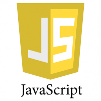

|
Apart from learning in the lectures provided by HKUST, I also spent lots of time learning by myself. By taking some online courses, watching guiding videos, reading technique books and passages and practicing by myself, I covered quite a lot fields including javaSE, javaEE, Android Development, SQL Server, C++, HTML and XHTML, JavaScript and DOM，linear Mathematics, differential equation, Multivariable Calculus and so on. |
JavaSEI have been learning javaSE since 2014 fall and I have a good command of the syntax and different kinds of mechanism of this language. Java is also my favorite programming language. I love the object-oriented thought very much because in my eyes it is so flexible and easy to understand. |
|
JavaEEAs I learned more and more about javaSE, I find it necessary to study javaEE and I began to learn JavaEE in this summer holiday. JavaEE is widely used in nowadays website and the servlet is a good example. I learned how to write an Httpservlet and put it into the Tomcat Serve, after that it can response to the HTML request such as “doGet” and “doPost”. I also learned the idea about Model View Controller (MVC) in which JavaEE plays a key role. In MVC we use HTML to design the View part, servlet to deal with the Controller and java to connect to the Database by using JDBC in Model part. |
|
Android DevelopmentI began to study android development in winter 2014 after understanding a little about java. Even though there is still a long way to go, making a simple android app is no longer difficult for me. Programming ideas are usually more important than the language itself. Although android has quite a lot of GUI widgets, the processes to implement them are usually very similar and the algorithm behind them is more important. |
|
SQL ServerThe Big-Date era is coming, to grasp some knowledge of the database is becoming more and more necessary. Databases are largely identical but with minor differences. I chose SQL Server which is one of the most popular databases to learn first. After three months of learning, I understand some basic concept in Database, how to design a Database, create table, insert update and delete information, select specific date from one or more tables with T-SQL and so on. |
|
C++I began to study C++ this summer and I have to say it is not easy to learn. At first I was confused by the concept of “const”, pointer and reference. It took me some time to understand these concepts. The functions and classes in C++ are also quite different from java. In C++, you need to pay more attention to the details than in Java. Due to the complicated knowledge in C++, I expanded my understanding in programming which is definitely helpful for me to learn other language. |
|
HTML and XHTMLFiles written in HTML and XHTML can be seen everywhere on the Internet. By using HTML and XHTML appropriately, one can plan his network resources effectively. With the help of CSS, we can separate the layout design and the style design. I studied HTML and CSS in this summer vacation, getting very familiar with some tags and their attributes which are used frequently. |
|
|  | JavaScript and DOMI have just studied JavaScript and DOM for about one month. With this technology we can create some dynamic html files. The DOM represents the whole html file in a normative way, so that we can use JavaScript to change the file precisely. |
Linear Mathematics, Differential equation, Multivariable CalculusFor a computer science student, a good command of mathematics is very important. Math is the base of algorithm. When we want to build a model, math plays a key part. For example, when designing algorithm for controlling quadcopter, we need to use a lot of linear mathematics to calculate the location and some movement parameters. I have studied these math for a long time and did a lot of practice. |